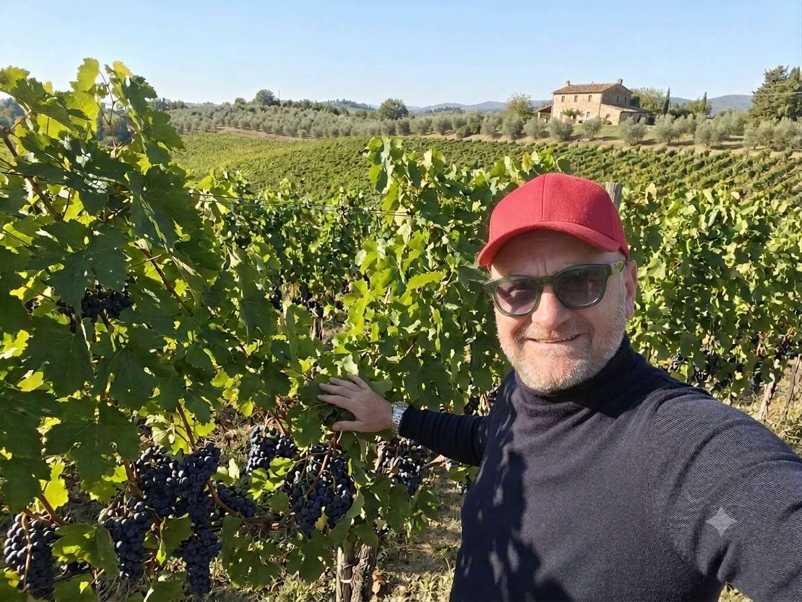
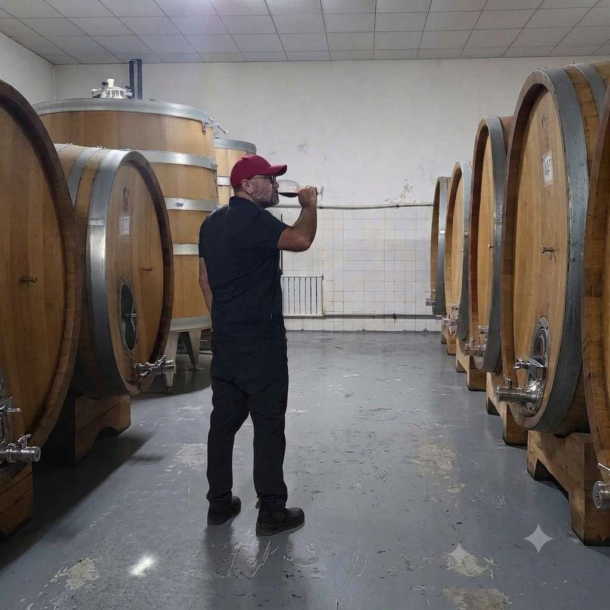
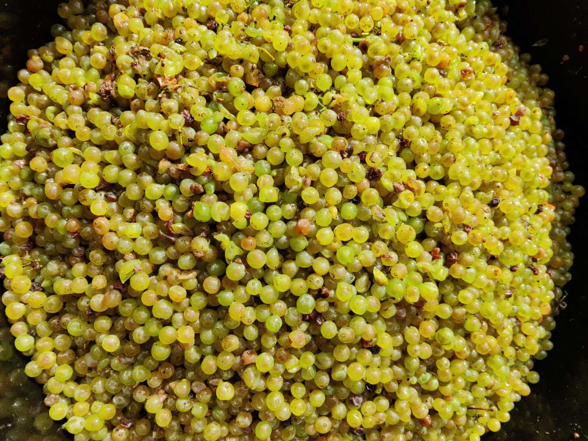
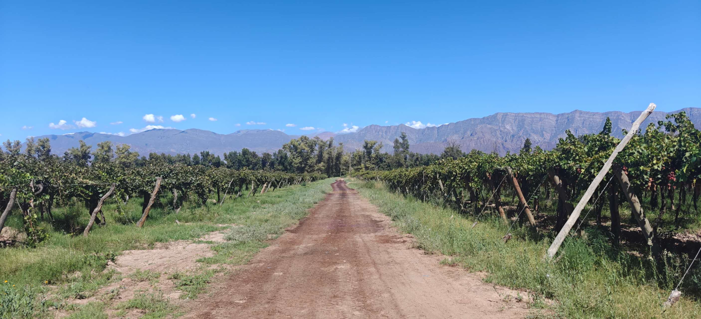
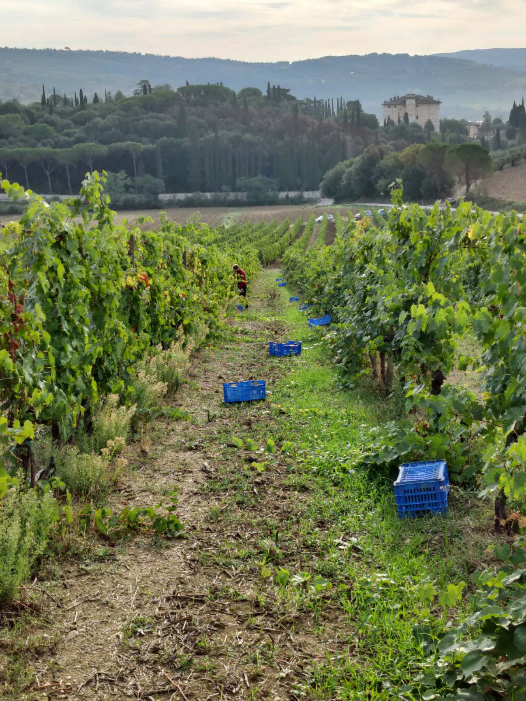
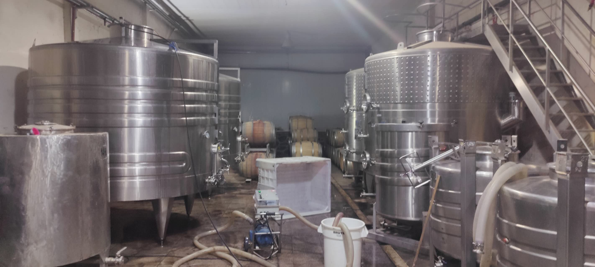

Loris Tartaglia
Soluzioni su misura per creare vini unici
Soluzioni su misura per creare vini unici
Non forziamo la natura, ne interpretiamo l'essenza, ne ascoltiamo il respiro per tradurne l'anima.
Ogni bottiglia è un viaggio che aspetta di essere vissuto.

Il vino non è mai stato solo una professione, ma un linguaggio con cui decifrare il mondo. La mia storia nasce dalla terra, dall'osservazione dei cicli naturali e dalla consapevolezza che ogni suolo possiede una voce unica, in attesa di essere ascoltata e compresa. Il mio percorso formativo è partito dalle basi tecniche ed agronomiche, ma ha trovato la sua vera vocazione solo nel momento in cui la teoria ha incontrato la fatica e la magia della vendemmia.
Per comprendere appieno le potenzialità della vite, ho sentito la necessità di superare i confini tradizionali. Dai climi estremi dell'emisfero sud alle storiche cantine del vecchio continente, ho avuto il privilegio di confrontarmi con filosofie produttive profondamente diverse. Questa immersione totale in terroir contrastanti ha plasmato la mia sensibilità, insegnandomi l'arte dell'adattabilità: non imporre un metodo prestabilito, ma modellare la tecnica sulle specifiche esigenze dell'uva e dell'annata.

Oggi, la mia visione enologica si fonda su tre pilastri: rispetto, purezza e identità. Credo fermamente in un approccio in cantina che sia il più rispettoso possibile, dove la tecnica funge da scudo per proteggere l'integrità del frutto, mai da maschera per alterarne le caratteristiche. La mia scelta stilistica rifugge le standardizzazioni: cerco vini che abbiano tensione, eleganza e una vibrante aderenza territoriale.

Collaborare con le aziende significa per me entrare in punta di piedi nella loro storia, analizzare il loro potenziale inespresso e tradurlo in vini capaci di emozionare, sfidare il tempo e raccontare senza compromessi l'unicità della loro origine.

Dal percorso sul campo alla bottiglia, offriamo consulenza tecnica e strategica alle aziende vitivinicole per trasformare ogni vigneto in un progetto di successo.
Seguiamo l'intera filiera produttiva, dall'impianto della vigna fino al prodotto finito, lavorando su ogni tipologia di vino: rosso, bianco, rosato e spumante, sia di fascia media che alta. Ogni etichetta deve possedere un'identità precisa, una qualità riconoscibile e una specifica unicità.
L'obiettivo è creare prodotti capaci di conquistare sia il consumatore finale che l'opinion leader, garantendo la piena soddisfazione di chi sceglie, acquista e gusta il vino.

Conoscere i gusti del mercato e padroneggiare le tecniche enologiche più evolute è il punto di partenza per ogni grande etichetta. Affianchiamo le aziende in ogni fase della produzione:
Scelte agronomiche mirate per valorizzare al massimo il terroir di appartenenza.
Ottimizzazione degli spazi e delle attrezzature enologiche per un flusso di lavoro efficiente.
Cura sartoriale dei processi di trasformazione delle uve in cantina e del loro affinamento.
Analisi sensoriale approfondita e degustazioni tecniche di controllo.
Monitoraggio costante delle caratteristiche chimico-fisiche tramite laboratori esterni.
Contatti strategici con la stampa di settore e gli stakeholder del mercato.
La priorità della nostra consulenza è la crescita concreta e sostenibile delle aziende con cui collaboriamo.
Mettiamo a disposizione un percorso basato sulla ricerca dell'eccellenza, instaurando un rapporto diretto e umano con i responsabili, i vignaioli e gli addetti di cantina. Questo scambio costante permette di trasmettere non solo la tecnica, ma soprattutto la passione.

Cerchiamo l'evoluzione in ogni passaggio: nella pianificazione del vigneto, nella cura della vendemmia e nella trasformazione. Perché è solo attraverso l'evoluzione costante che si costruisce una vera crescita aziendale.
Un itinerario di scoperte e visioni uniche traccia un percorso che attraversa confini, culture e tradizioni profondamente diverse. Un viaggio che si sviluppa tra le terre estreme dei due emisferi, raccogliendo la forza primordiale del deserto di Atacama e i silenzi immensi del Gobi.
La rotta prosegue toccando i panorami incontaminati della Nuova Zelanda e le radici profonde dell'Africa, per poi spaziare dall'innovazione dinamica degli Stati Uniti fino alla sapienza millenaria della vecchia Europa.
Ogni vendemmia rappresenta una sfida nuova e irripetibile che arricchisce questo cammino, lasciando un frammento di DNA in ogni singola bottiglia per custodire l'autenticità di ogni singolo luogo vissuto.